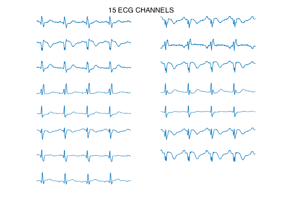
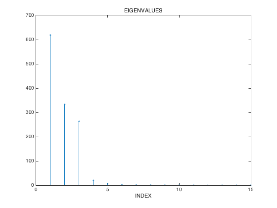
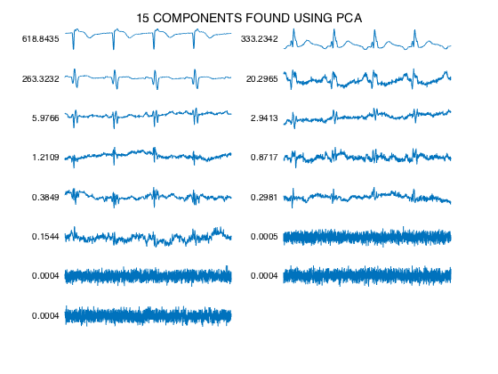
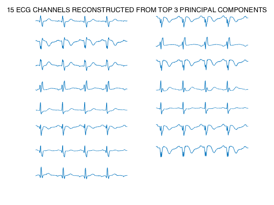
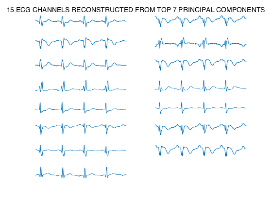

PCA of multichannel ECG data
This program illustrates the use of PCA on compressing multichannel ECG data.
Contents
Load data
clear load multichannel_data_1 whos print_figs_to_file = 0; % set to 1 or 0
Name Size Bytes Class Attributes X 15x3000 360000 double t 1x3000 24000 double
Center the data (remove mean from each component)
for k = 1:15 X(k,:) = X(k,:) - mean(X(k,:)); end % display data clf suptitle('15 ECG CHANNELS') for k = 1:15 subplot(8,2,k) plot(t,X(k,:)) axis tight axis off end if print_figs_to_file orient landscape, print -dpsc pca_ECG_figures end
Compute PCA matrix
A = X * X'; % data covariance matrix - 15 x 15 matrix % compute eigenvectors and eigenvalues [E,D] = eig(A); % check that A = E D E' err = A - E * D * E'; max(abs(err(:))); % eigevalues in descending order d = diag(D); [tmp, k] = sort(-d); % resort d = d(k) D = diag(d); E = E(:,k); % check that A = E D E' err = A - E * D * E'; max(abs(err(:))); % Set P matrix P = E'; clf stem(d,'.') title('EIGENVALUES') xlabel('INDEX') if print_figs_to_file orient landscape, print -append -dpsc pca_ECG_figures end
d =
618.8435
333.2342
263.3232
20.2965
5.9766
2.9413
1.2109
0.8717
0.3849
0.2981
0.1544
0.0005
0.0004
0.0004
0.0004
 Find components
The components are found using P*X. The eigenvalue of each component is displayed by the plot.
% compute the components of the data Y = P * X; % display component signals clf suptitle('15 COMPONENTS FOUND USING PCA') for k = 1:15 subplot(8,2,k) plot(t,Y(k,:)) th = text(t(1)-0.1,0,sprintf('%9.4f',d(k))); set(th,'units','normalized'); set(th,'HorizontalAlignment','right'); axis tight axis off end if print_figs_to_file orient landscape, print -append -dpsc pca_ECG_figures end
About the eigenvalues...
Note that the eigenvalues are exactly equal to the sum of square of each component.
S = zeros(15,1); for k = 1:15 S(k) = sum(Y(k,:).^2); end S % The values computed here from the principle components % are exactly the eigenvalue we found earlier. % You can therefore see that some of the components are very small % in amplitude.
S =
618.8435
333.2342
263.3232
20.2965
5.9766
2.9413
1.2109
0.8717
0.3849
0.2981
0.1544
0.0005
0.0004
0.0004
0.0004
Approximate all 15 ECG signals using first 3 principle components
If we reconstruct the 15 channels from only the first 3 components, then we obtain a a 15-channel data set that is close to the original 15-channel data set.
Y2 = Y; Y2(4:15,:) = 0; X_approx = P'*Y2; % display approximate reconstruction from first 3 principle components clf suptitle('15 ECG CHANNELS RECONSTRUCTED FROM TOP 3 PRINCIPAL COMPONENTS') for k = 1:15 subplot(8,2,k) plot(t,X_approx(k,:)) axis tight axis off end if print_figs_to_file orient landscape, print -append -dpsc pca_ECG_figures end
Approximate all 15 ECG signals using first 7 principle components
If we reconstruct the 15 channels from only the first 7 components, then we obtain a 15-channel data set that is almost indistinguishable from the original 15-channel data set. Practially all the information in the 15 channels can be represented using only 7 channels.
Y2 = Y; Y2(8:15,:) = 0; X_approx = P'*Y2; % display approximate reconstruction from first 7 principle components clf suptitle('15 ECG CHANNELS RECONSTRUCTED FROM TOP 7 PRINCIPAL COMPONENTS') for k = 1:15 subplot(8,2,k) plot(t,X_approx(k,:)) axis tight axis off end if print_figs_to_file orient landscape, print -append -dpsc pca_ECG_figures end